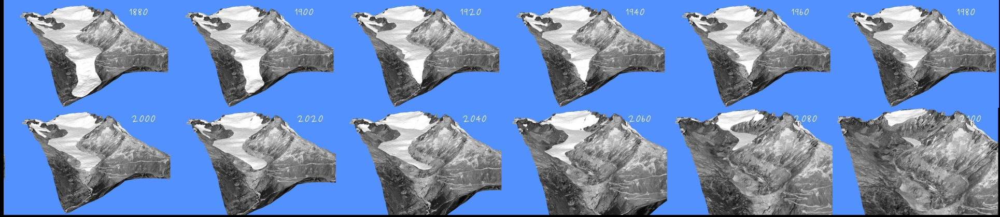

Glacier Modelling — UNIL, Master course#

Teacher: Guillaume Jouvet (guillaume.jouvet (at) unil.ch)
Assistant: Brandon Finley
Format: 3 afternoons × 4 hours
Course objective#
This course gives an overview of the basic physical processes that govern the evolution of mountain glaciers, and of how to model them numerically. It is hands-on: you will use the Instructed Glacier Model (IGM) to model the past and future evolution of a Swiss glacier of your choice in a mini-project.
Programme#
Hour 1 |
Hour 2 |
Hour 3 |
Hour 4 |
|
|---|---|---|---|---|
Session 1 |
Lecture 1a: Glacier processes |
Lecture 1b: Glacier modelling |
Set up RenkuLab, with simple model (Tutorial) |
Choose your glacier for the mini-project |
Session 2 |
Lecture 2: Introduction to IGM, then a past and a future run (step by step) |
Mini-project |
Mini-project |
Mini-project |
Session 3 |
Lecture 3: Additional experiments (response time, moraines), how to write the report |
Mini-project |
Mini-project |
Mini-project |
Then: write the report (deadline: to be announced).
Material#
Session 1: Lecture 1a, Lecture 1b, Setting up RenkuLab, Tutorial, Choose your glacier
Session 2: Lecture 2, project template
my-glacier/(copied once to~/work/my-glacier)Session 3: Lecture 3
Session 4 (taught in the course Dates and Rates of landscape evolution): Lecture 4: Mont Miné, analysis notebook
Mini-project: guidelines in Lectures 2 and 3, in your own copy of
session2/my-glacier/
Computing environment#
Everything runs online on RenkuLab with your SWITCH edu-ID: IGM and all Python packages are pre-installed. Nothing to install on your laptop. You set it up in Session 1 (hour 3). See Working online with RenkuLab.
How we work with IGM: edit parameters in YAML files, run IGM in a terminal, analyse the results in a notebook (all three side by side in JupyterLab).
Further resources#
https://www.antarcticglaciers.org — the best website to learn more about glacier processes.
“Karthaus Summer School Lecture Notes”, for the mechanics and the maths: https://link.springer.com/book/10.1007/978-3-030-42584-5
IGM documentation and examples: https://igm-model.org, instructed-glacier-model/igm-examples
Swiss glaciers: map.geo.admin.ch, GLAMOS